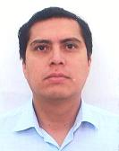

Dr. Iván Pacheco Soto
Profesor Asistente
Tec de Monterrey Campus
Zacatecas
e-mail: ipacheco@itesm.mx
Áreas de Interés
Aplicaciones de Procesos Empíricos, Teoría de Probabilidad, aplicaciones estadísticas en Ingeniería Industrial y Educación.
Formación Académica
Doctorado en Estadística
The University of North Carolina at Chapel Hill
Department of Statistics and Operational Research
Tesis: Cyclical Time Series with Squeezed Time
Asesor: Dr. Gordon Simons
1995-2005
Maestría en Estadística
Universidad de Guanajuato
(Facultad de Matemáticas) y Centro de Investigación en Matemáticas
Tesis: Procesos Empíricos
Asesor: Dr. José María González Barrios
1991-1993
Licenciatura en Física y Matemáticas
Instituto Politécnico Nacional
Escuela Superior de Física y Matemáticas
Tesis: Representación de LePage de una variable aleatoria estable
Asesor: M. en C. Jorge Gómez Arias
1986-1990
Experiencia Docente
Profesor de planta en el Instituto Tecnológico y de Estudios Superiores de
Monterrey Campus Zacatecas en la División de Profesional.
Enero 2005 - a la fecha
Profesor de cátedra en el Instituto Tecnológico y de Estudios Superiores de
Monterrey Campus Zacatecas en la División de Profesional.
Agosto 2003 - Diciembre 2004
Profesor de cátedra en la Universidad de Autónoma de Zacatecas en la Unidad
Académica de Matemáticas.
Agosto 2003 - Junio 2004
Asistente en el Centro de Investigación en Matemáticas, A.C.,
Guanajuato, Gto.
Agosto 2002 - Diciembre 2002
Asistente y profesor de cátedra en The University of North Carolina at Chapel
Hill, Department of Statistics, Chapel Hill, North Carolina U.S.A.
Agosto 1995 - Mayo 2002
Profesor de tiempo parcial en la Universidad de Matemáticas en la Facultad de
Matemáticas, Guanajuato, Gto.
1991-1994